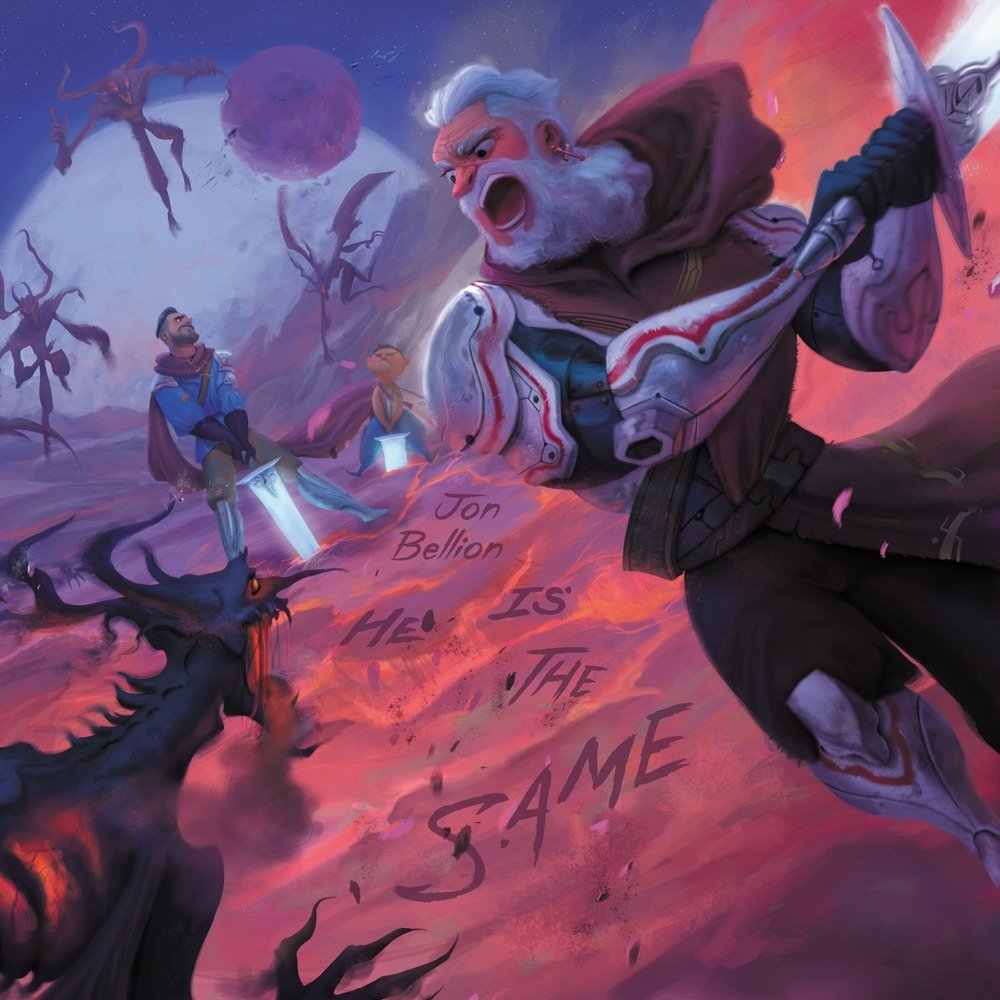
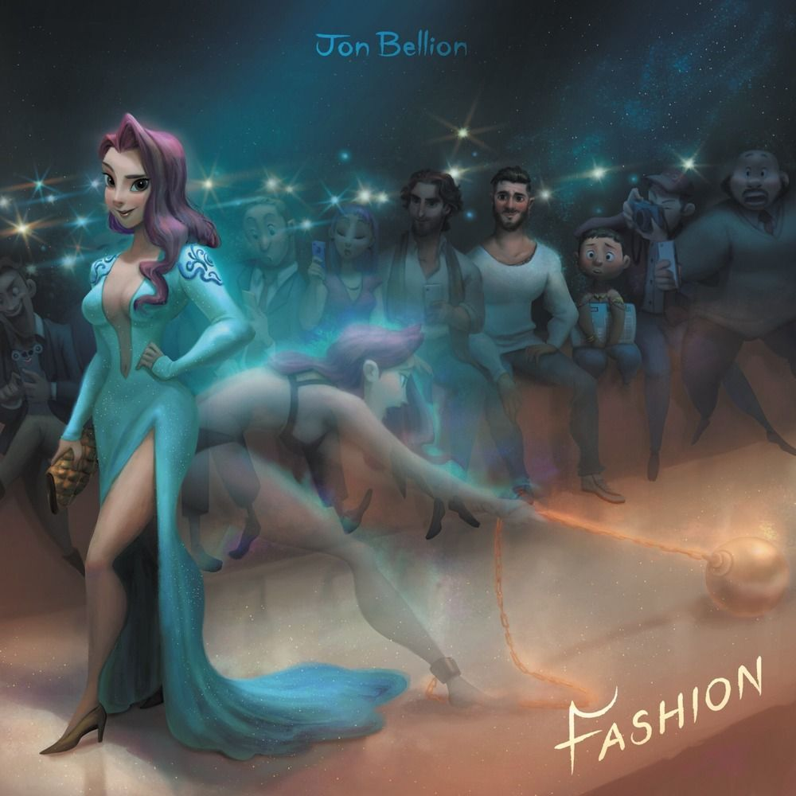
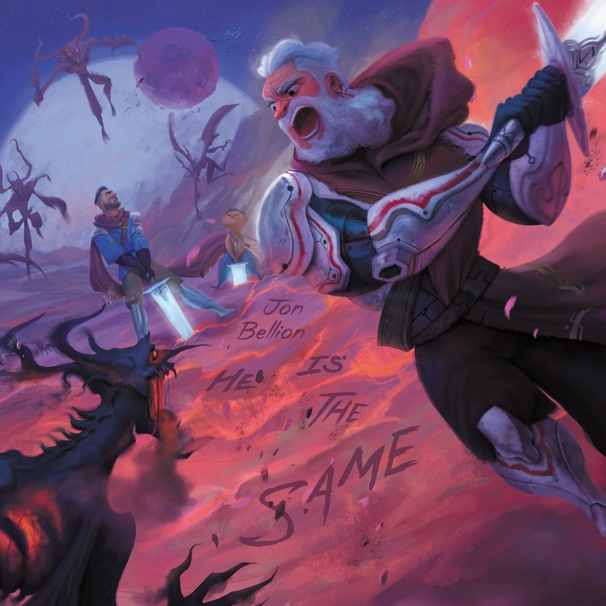
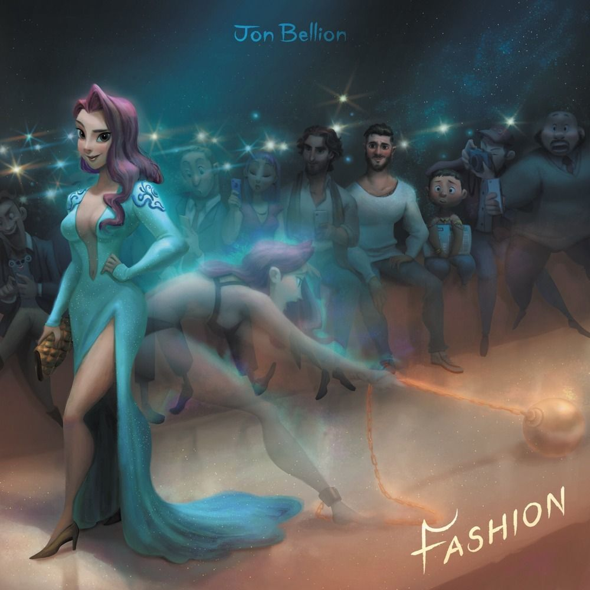

-La Condición Humana-
 





Llevaba largas horas observando cómo las hadas del lago danzaban al ritmo del viento que agitaba el agua, dando un sentimiento de calma, como si ignoraran la ausencia de las constelaciones por la noche. El sol y sus hermanas habían desaparecido, y ahora las hadas de la luz debían arreglárselas para iluminar durante el día. Pero el caer de la noche dificultaba en sobremanera la cruzada que él realizaba.
Había estado buscando a aquel niño durante más de un año, pero no había forma de encontrarlo. Sin embargo, él era el caballero más prestigioso y valiente de la región, y la madre del chico sabía que, si alguien podía encontrar a su pequeño, era John. Pero no se trataba de un simple caballero. Lo que lo distinguía de los demás, era que, de alguna forma, el Rey le había encomendado una misión, otorgándole como herramienta una espada que, por más que pasaran los años de los años, y por más que éste tardara en cumplir con la encomienda, jamás dejaría de tener la misma fuerza, el mismo corte y el mismo filo. Sin embargo, John no sabía cómo encontrar aquella respuesta a la incógnita que el Rey le había formulado.
—Quiero que encuentres la respuesta a La Condición Humana —exigió el Rey a su mejor caballero—. Si lo consigues, me aseguraré de que vivas bien por el resto de tu vida. Te daré todas las riquezas, vanidades y placeres que quieras —ofreció sin chistar.
—¿La Condición Humana? —preguntó extrañado—. Disculpe que lo pregunte pero, ¿a qué se refiere con La Condición Humana?
—Se trata de la razón de ser de un humano. ¿Qué sentido tiene la vida humana?, ¿qué objetivo? Eso es lo que quiero que contestes. Y para tu travesía, te daré a Noilleb, mi propia espada. Forjada por las mismísimas hadas con el polvo de estrella que las constelaciones dejaron atrás al marcharse. Te ayudará a combatir la desgracia de la lujuria, el egoísmo y la injusticia. Buen viaje, John —dijo el Rey al marcharse a sus aposentos.
Pero sabía que encontrar a ese niño era la clave para alcanzar la respuesta a tan intrigante pregunta, ya que él lo guiaría a la Reina de las Hadas. Después de un largo caminar a través del bosque, halló un agujero enorme en el suelo. En el fondo, se encontraban pequeños rastros de un polvo brillante. John asumió que se trataba del mismo material usado para forjar a Noilleb. Más allá del hueco, habían marcas en la tierra húmeda que guiaban a una elevadura donde se hallaba escrito, sobre la tierra, lo siguiente:
"Por la maldad que arrasa este mundo, las estrellas nos han abandonado."
John continuó con su camino hasta llegar a un sitio suficientemente adecuado para pasar la noche. En sueños, vio a una mujer de cabello negro, rostro gentil y vestiduras doradas que llevaba en su cabeza una corona hecha de constelaciones. Su brillo era tan intenso que sentía que, si mantenía la mirada dirigida hacia ella, acabaría perdiendo su capacidad de ver. Entonces, despertó de golpe.
A la mañana siguiente, continuó con su búsqueda. No podía parar de pensar en todo lo que había soñado la noche anterior. Era tan extraño. ¿Cómo te enamoras de alguien que no conoces? O peor aún. ¿Cómo te enamoras de alguien que ni siquiera existe? Al mismo tiempo, estaba ansioso por hallar la clave de su travesía. Si ese niño lo podía guiar a donde se encontraba la Reina de las Hadas —enemiga del Rey de los Humanos por naturaleza—, podría evacuar su intriga y saciar la ambiciosa curiosidad del Rey.
Tras un largo caminar, arribó a un pueblo pequeño, cerca del bosque —cuya densidad había disminuido varios kilómetros atrás—. En él, lo acogió una mujer que, pese a ser muy amable, estaba profundamente deprimida, a tal punto de que sus ojos la delataban al verla.
Le explicó al caballero que no muchas personas visitaban ese pueblo, pero que la alegraba mucho recibir a alguien nuevo en casa. Confesó que, desde que su hijo dejó el pueblo, se sentía muy sola.
—Disculpe la pregunta, que espero no tome usted como fuera de lugar o inapropiada. ¿Sabe usted si, en algún sitio cercano a esta villa, se halla el hogar de la Reina de las Hadas?
—¿La Reina de las Hadas? —repitió confundida.
—En efecto, me encomendaron descifrar una incógnita y requiero de la ayuda de la Reina de las Hadas para resolver mi desventurado acertijo.
—Márchese de este pueblo, o se arrepentirá de haber siquiera mencionado el nombre de la Gran Reina de las Hadas —dijo de manera súbita y amenazante. El caballero se levantó de la mesa y, con su mano derecha, se preparó para desenvainar su espada. Sin embargo, con temor de usarla, decidió retroceder y salir de aquel pueblo lo antes posible.
Tras adentrarse de nuevo en el bosque, habiendo caído ya la noche, distinguió entre los árboles la figura que sus sueños le habían permitido contemplar la noche anterior. Tras seguirla un par de minutos, llegó de nuevo a aquella elevadura donde estaban escritas esas fuertes afirmaciones, acusando a los terranos de la desaparición de las constelaciones.
—Acércate. No temas, John —exclamó la mujer.
—¿Cómo sabes mi nombre? —preguntó el caballero.
—¿De verdad crees que el título "Reina de las Hadas" es sólo un nombre? —contestó el hada.
—Eres justo a quien estaba buscando —dijo John, entusiasmado.
—El niño al que buscas ya no pertenece a este mundo, pero supongo que él solo era un medio que querías encontrar para llegar a mí, ¿verdad? —preguntó con tono capcioso.
—Es verdad, su alteza —dijo el caballero sin cuidar sus palabras—. Quiero saber cuál es la respuesta a La Condición Humana —agregó con franqueza.
—Pues lamento decirte, avaro caballero, que no te lo diré —concluyó la Reina.
—¿Por qué, su alteza? —preguntó preocupado.
—Porque la razón por la que portas esa sublime espada en tu vaina no es más que una extorsión para usar La Condición Humana como un arma a favor de los terranos. Es culpa vuestra que hasta las constelaciones nos hayan abandonado. Si quieres saber la respuesta a La Condición Humana, primero debes entender lo que ser humano realmente significa.
—Disculpe la insolencia, su majestad, ¿pero cómo sabe usted lo que ser humano realmente significa si usted nunca ha tenido las limitaciones que nosotros, los humanos, poseemos?
—Porque yo no siempre fui un hada, así como tu Rey no siempre fue humano. Si quieres entender el verdadero valor de tu anhelada condición, debes demostrar que, pese a los ensaltamientos que recibas, o los logros que alcances, o las vestiduras que portes, el humano dentro de ti siempre será el mismo.
—¿Y qué tengo que hacer para conseguirlo? —exclamó John, dispuesto a hacer lo que sea para cumplir con la encomienda de su Rey.
—Debes dejar atrás tu vida de lujos y placeres. Aprende el valor de servir a los demás sin esperar recibir nada a cambio. Sólo así serás realmente feliz y podrás encontrar la respuesta que buscas.
—Pero ya me he demorado mucho en esta cruzada, su alteza. ¿No existe una forma de obtener la respuesta de una manera más sencilla? —preguntó ingenuamente.
—Buscas una meta, pero no estás dispuesto a sacrificarte por ella. ¿Crees que alguien así es merecedor de la clave para traer de vuelta a las estrellas? —dijo finalmente— Márchate, porque tu ego y avaricia no hacen más que alejar a las constelaciones de nuestro mundano planeta. Es por culpa de tu especie que jamás volveremos a contemplar un cielo estrellado.
Entristecido por las palabras del hada, el caballero se marchó. Entonces, empezó a pensar en un modo de traer de vuelta a las constelaciones. Sentía que el peso del mundo reposaba sobre su espalda. Pero en el fondo sabía que solo necesitaba una noche como esa para que el firmamento se empapara de estrellas de nuevo. Decidió entonces despojarse de su armadura brillante y esconder a Noilleb en aquel agujero que había hallado antes. Después, se dirigió a casa de la madre del chico perdido para darle las malas noticias. Sin embargo, en lugar de irse tras contárselo, se quedó acompañando a la mujer en su pesar.
—Entonces, ¿murió?
—Lo único que pude averiguar fue que su hijo ya no se encuentra en nuestro planeta mundano.
—¿Pero cómo lo sabe? Yo envié al mejor caballero a descubrir su paradero y no perderé esperanzas hasta que él regrese —dijo la mujer sin percatarse de que dicho hombre se encontraba frente a ella.
—Porque yo solía ser aquel caballero con brillante armadura que usted menciona. Me di cuenta de que dicha vocación no hacía más que menguar, poco a poco, el bien que todavía yacía en mi corazón, todo gracias a mi insaciable necesidad de moda, de placer y lujuria. Pero si no me hubiera percatado del mal que estaba haciendo, tanto a mí mismo como a los demás, me habría perdido en la oscuridad. Y ahora no podré jamás estar con aquella hada de la que me encuentro enamorado. Lo único que puedo hacer es tratar de enmendar mis errores ayudando a los demás.
—Lamento no haberlo reconocido, pero me temo que necesitaremos de su ayuda para salvar a este bosque. El Rey de los Humanos envió a sus tropas a masacrar a estos pueblos en busca de la Reina de las Hadas.
Sin siquiera responder, salió de la casa de la mujer y corrió al agujero donde se encontraba Noilleb, pero al llegar al lugar, no la encontró. Angustiado, decidió colocarse de nuevo su armadura e ir a confrontar a los soldados del Rey totalmente desarmado, que era lo que consideraba como su última opción. Tras ponerse su plateada armadura, cuya capa color azul se había rasgado a lo largo de sus aventuras, se encaminó para interceptar a las tropas de su venerable Rey. Cruzó hasta el otro extremo del bosque, pasando por el lago cerca del cual había estado admirando a las hadas tan solo dos noches antes. Pero esta vez, dichas hadas no iluminaban el camino, y la noche estaba comenzando a oscurecer todo como una manta que cubría todo lo que la luz alguna vez había tocado.
Entonces decidió prender una antorcha con una rama cercana para poder seguir su camino. El fuego que emitía era como una calurosa vela que lo guíaba entre las neblinas de la noche y la oscuridad. Al salir por completo del bosque y llegar a la llanura, divisó a la distancia varias luces iguales a la que él portaba. Sabía que el destino del mundo terrano, el de las hadas y el de las constelaciones estaba en sus manos, sabía que ahora ya no blandía la intimidante espada que lo había estado protegiendo hasta entonces. Fue en ese momento cuando una voz familiar lo llamó a la distancia.
—Oh mi querido caballero, veo que finalmente nos volvemos a encontrar. Pensé que no te volvería a ver nunca más —exclamó el Rey, que era escoltado por varias tropas.
—Su majestad, le ruego que, por todas aquellas batallas que he librado en su nombre y todas aquellas victorias que hemos compartido, por favor, no destruya este bosque ni lastime a la Reina de las Hadas. Si lo hace, puede dar por seguro que perderá la respuesta a La Condición Humana.
—¿Es esto una amenaza por parte de la Reina? —preguntó molesto el Rey.
—No señor, se trata de una plegaria por parte de su caballero más valioso —contestó John.
—No sé quien seas tú, porque recuerdo bien que, a mi caballero más valiente, le di mi espada más poderosa. Y veo que vienes completamente desarmado. Así que te lo diré una sola vez. O te apartas de mi camino o te convertirás en un traidor a tu Rey y a tu región, perderás tus beneficios y el título por el cual te haces llamar a tí mismo caballero —amenazó el Rey de los Terranos, sin importarle que sus malas intenciones fueran reveladas estando tan cerca de su victoria.
John, inmóvil, dejó caer su antorcha y se puso a pensar en las posibles consecuencias de sus acciones. Finalmente, sintió una mano cálida que acariciaba su mejilla. Es entonces cuando oyó la voz del hada del que tan enamorado se encontraba y, por primera vez en lo que sería toda su vida, experimentó la verdadera alegría.
—Mi querido John, caballero ilustre, pero más aún, humano de bien. Has demostrado tu lealtad a tus valores y a tus principios, más que tu lealtad a tu Rey y a tu título. Por ello te diré que la clave de La Condición Humana a la que siempre estuviste destinado a descubrir, se halla en tu corazón. Pero se materializa ahora en la vaina que portas —señaló el hada.
Inmediatamente, Noilleb apareció en la vaina de John, brillando con un esplendor con el cual jamás había brillado antes. Es entonces cuando la Reina se dirigió al Rey de los Terranos.
—Malvado, que no pudiste saciar tu avaricia y tu sed de poder, ni siquiera teniendo la llave a La Condición Humana, codiciada por muchos desde el principo de los tiempos. Te digo ahora que, aunque descubrieras el secreto de dicho don, seguiría siendo demasiado pesado para que tu Alma llegara a portarlo.
Enfurecido, el Rey mandó a sus tropas a arrebatarle la ahora muy codiciada espada. John, sin titubear, desenvainó su arma y, con un revéz perfecto, congeló las almas de las tropas. De inmediato y de un solo golpe de espada, dejó inmóvil al avaricioso y malvado Rey de los Terranos, cuyo reinado nunca había sido —ni volverá a ser— tan oscuro como lo era hasta entonces. Sin embargo, dicho efecto duró poco éste, al recuperar el control de su cuerpo y con su propia daga, hirió a John en su abdomen. Éste, jadeando, retrocedió y oyó la voz de su amada una vez más.
—John, el Rey al que enfrentas es muy poderoso y astuto. Tu espada por si sola no podrá con él como pudo con sus tropas; clávala en la tierra y trae a las constelaciones de vuelta. Ellas se encargarán. Pero te advierto, si sientes que la fuerza de la espada menguará por completo tu respirar, deténte y yo me sacrificaré por tí —dijo al ver la condición en la que se encontraba.
Sin pensarlo dos veces, clavó con fuerza la espada en el suelo y ésta, purificándolo, puso fin al reinado de la oscuridad. Fue entonces cuando, una a una, las estrellas volvían a ocupar su lugar. Pero John sentía cómo la espada absorvía, poco a poco, su vitalidad. Pero al recordar a aquella por la que peleaba, se mantuvo firme hasta que la última estrella apareció en el cielo. El Rey, al ser iluminado por el brillar de la luna y de las constelaciones, expiró al instante. Al mismo tiempo, John, completamente agotado, cayó de rodillas sobre la tierra.
—John, mi querido soldado, mi valiente salvador. Ahora eres digno de la respuesta a la pregunta que tanto tiempo has estado buscando. La Condición Humana es preciosa, y terrible al mismo tiempo. Porque, para alcanzarla, necesitas sacrificarte por completo a favor de una causa noble. Tú eres el ejemplo perfecto de La Condición Humana. Te sacrificaste por mí, por el bosque, por las hadas, por tu pueblo y por las constelaciones. Te lo agradezco desde lo más profundo de mi alma —concluyó mientras besaba al héroe en su mejilla.
Finalmente, John supo que había cumplido con su verdadera misión, no como soldado o caballero. Había cumplido con su Condición Humana. Y observó, durante sus últimos momentos un cielo lleno de las constelaciones que había traído de vuelta. Y al morir, al igual que aquel niño del que alguna vez escribí una historia similar, vio su alma unida a las constelaciones del firmamento, para iluminarlo junto a los demás héroes, siendo admirado desde la tierra por aquellos que aún debían cumplir con su Condición Humana.
Inspirado en los artes del álbum de Jon Bellion, The Human Condition.
Canciones de The Human Condition que me ayudaron a soñar con esta historia:
1. All Time Low
2. He Is The Same
3. Fashion
4. Woke The F*ck Up
5. Weight Of The World - Blaque Keyz
6. The Good In Me
7. Hand Of God - Outro
Las canciones y los libros son hermanos. El ritmo de una canción y la portada de un libro representan lo mismo; la apariencia. Así como la letra de una canción o el contenido de un libro representan sus almas. Creo que si valoráramos más la letra y el contenido que un ritmo o un diseño de portada, las estrellas brillarían sobre nosotros más seguido...
Espero haberte ayudado un poco a descubrir cuál es tu condición humana.